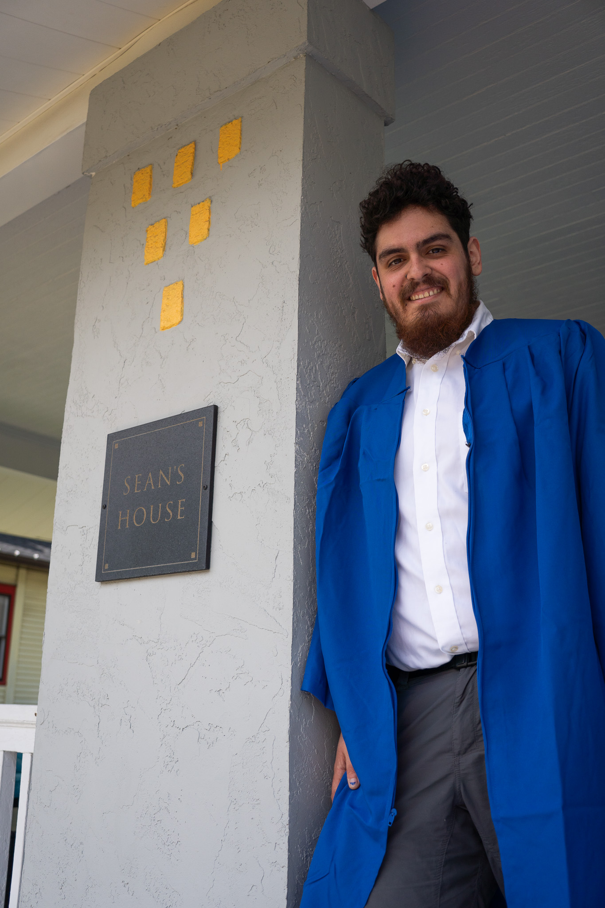

I am a first year Graduate student in the CLASIC program at the University of Colorado Boulder.
I recieved my BA in Linguistics with minors in Cognitive Science and Computer Science at the University of Delaware.
In my free time I am an avid musician, playing french horn and performing at university ensembles and local orchestras.

My research focus is in NLP for endangered and low resource languages. I am also interested in semantics and phonetics.